同一表面旋转并移动视点，为什么明暗与高光不同？
固定光源与材质：转动表面，整体明暗渐变；移动眼睛，局部高光随之闪烁漂移。
现象一 · 漫反射 (Diffuse)
表面粗糙微观结构向全空间各向同性散射；形成平缓的明暗过渡，塑造物体的三维基本形体与固有色。
现象二 · 镜面反射 (Specular)
表面光滑微观结构沿反射角高度定向出射；形成局部刺眼的耀斑，塑造物体的表面光滑度与质感。
预测：视点移动，哪种反射会发生变化？
法向量N：给表面一个局部朝向
曲面在任意一点处的切平面垂线称为该点的法向量（Normal），是光照计算的第一基石：
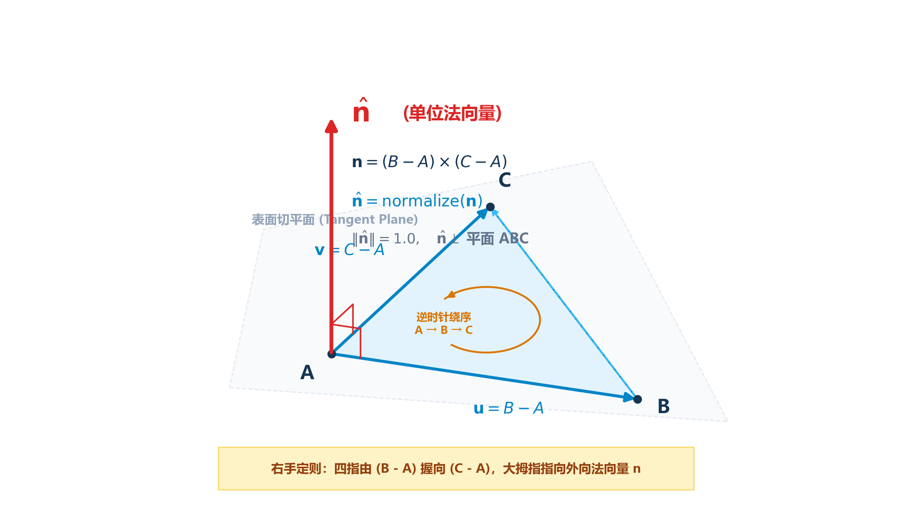
① 几何朝向 (\(\hat{\mathbf{n}} \perp \text{切平面}\))
垂直于局部表面切平面，定义物体表面的“正面”与“朝外方向”。
② 顶点逆时针绕序 (CCW)
右手定则：顶点按逆时针排布时，叉乘 \((B-A)\times(C-A)\) 天然指向外侧。
③ 严格单位化 (\(\|\hat{\mathbf{n}}\| = 1\))
归一化长度，确保后续点乘纯粹反映角度余弦，不受三角形边长尺寸干扰。
图解法线：面法线与顶点法线为何不同？
同一折面/曲面上的法线可以按面定义，也可按顶点进行平滑处理；光照公式需要的是当前着色点的单位法线。

dot(N,L)？
点积：把两个三维方向变成夹角余弦
正对入射 (\( \theta=0^\circ\))
\(\cos 0^\circ = 1.0\)
光线垂直直击表面，接受能量密度最大。
倾斜入射 (\(0^\circ< \theta<90^\circ\))
\(0 < \cos \theta < 1.0\)
光能被倾斜表面稀释分摊，亮度平滑降低。
背光照射 (\( \theta\ge 90^\circ\))
\(\cos \theta \le 0\)
光线位于切平面下方，物理上无法照亮表面。
一张图读懂 N·L = cosθ 的三个角度
固定光照强度，仅改变光线与法线夹角，观察同一面积表面如何从亮变暗，最后进入背光区。
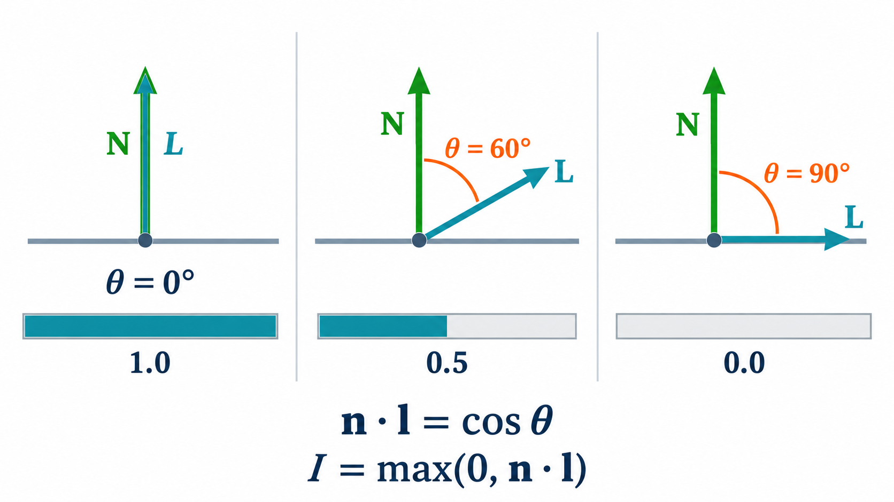
max(0, dot(N,L)) 截断为0。
D06-02 · 法向量与漫反射显微镜
法向量与漫反射显微镜
直观拖动单位法线 \(\mathbf{n}\) 与光线向量 \(\mathbf{l}\)，实时探究夹角 \(\theta\)、点积 \(\mathbf{n}\cdot\mathbf{l}\) 与表面朗伯明暗的动态数学映射。
带着问题观察与验证
- 0° 正射验证：将 L 对齐 N（\(\theta = 0^\circ\)），观察点积是否为 1.0，漫反射亮度是否达到峰值。
- 60° 余弦减半：拖动到 \(\theta = 60^\circ\)，验证 \(\cos 60^\circ = 0.5\)，明度恰好减半。
- 90° 临界切光：拖到 \(\theta = 90^\circ\)，观察点积是否恰好归零。
- >90° 背光截断：拖入背光区（如 120°），观察点积出现负值时，\(\max(0, \dots)\) 如何将实际漫反射保护性截断为 0。
视线向量V与理想反射向量R
要计算高光，除了法向量 \(\hat{\mathbf{n}}\) 和光线 \(\hat{\mathbf{l}}\)，还必须引入视点与反射轴：
视线向量 \(\mathbf{v}\) (View Vector)
\(\hat{\mathbf{v}} = \operatorname{normalize}( \text{Eye} - P)\)
由表面点指向相机视点位置，表示观察者的视线朝向。对应第五章中的相机坐标系 Eye 位置。
反射向量 \(\mathbf{r}\) (Reflection Vector)
\(\hat{\mathbf{r}} = 2(\hat{\mathbf{n}}\cdot\hat{\mathbf{l}})\hat{\mathbf{n}} - \hat{\mathbf{l}}\)
入射光线关于法向量 \(\mathbf{n}\) 的理想镜面反射方向。符合光学反射定律：入射角等于反射角，且共面。
图解 R 与 V：入射角＝反射角
反射向量 R 由光源方向 L 和法线 N 决定；当视线 V 接近 R 时才可能出现强高光。
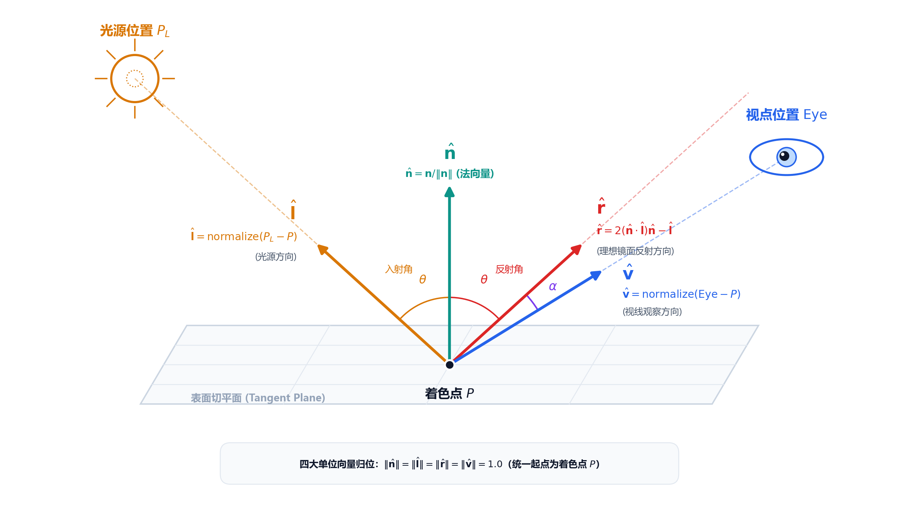
定律一 · Lambert 漫反射：光能量的几何分摊
粗糙微观表面将光向全半球空间各向同性散射；接收到的光通量取决于表面受光面积：
垂直入射 (\( \theta=0^\circ\))
光束截面完全落入表面最小区域 \(A\)，单位面积接收到的能量密度最大，表面最明亮。
倾斜入射 (\( \theta>0^\circ\))
相同能量的光束被拉长铺展到 \(A/\cos \theta\) 的更大面积上，单位面积光通量降低为 \(\cos \theta\) 倍。
为什么照射越斜越暗？看光束投影面积
同宽、同能量的光束垂直照射时覆盖面积小；倾斜照射时覆盖面积变大，单位面积分得的能量变少。
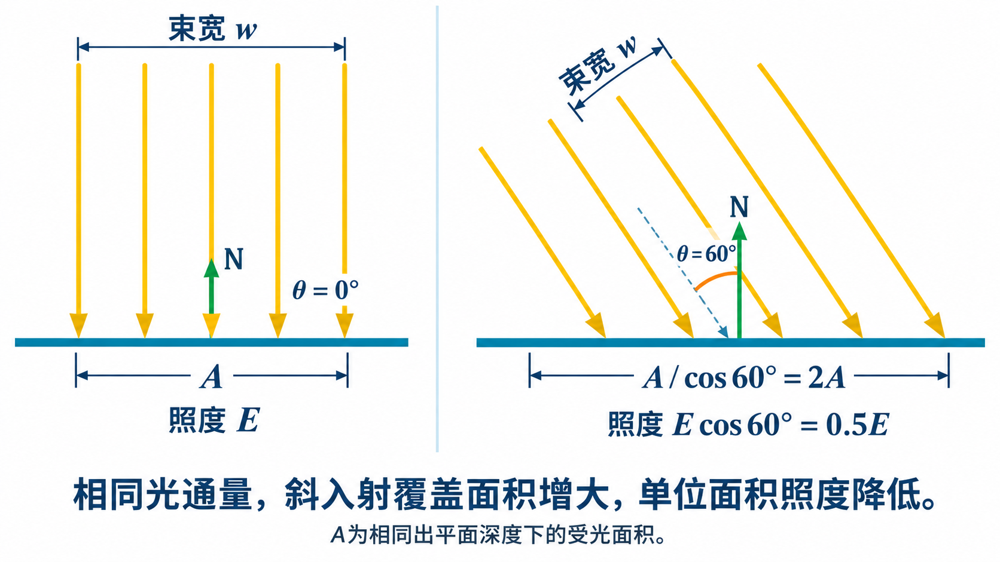
Lambert 余弦定律计算公式
漫反射系数 \(k_d\)
\(k_d \in [0, 1]\)，代表材质对入射光的漫散射反射率，在彩色着色中对应物体固有色（如红球 \(k_d=(0.8,0.1,0.1)\)）。
光源强度 \(I_L\)
入射光的辐射强度与冷暖颜色（RGB 能量向量）。
非负截断 \(\max(0, \dots)\)
背光面夹角 \( \theta > 90^\circ\) 时点积为负，强制截断为 0，防止物理荒谬的“负亮度吸光”。
漫反射的核心特征：视点无关性
为什么公式 \(I_d = k_d I_L \max(0, \hat{\mathbf{n}}\cdot\hat{\mathbf{l}})\) 中完全没有视线向量 \(\mathbf{v}\)？
朗伯辐射特性
微观表面各向同性散射，单位立体角的发光强度满足朗伯余弦；而人眼透视投影视网膜面积也满足同一余弦投影，两者恰好精确抵消！
渲染几何结论
漫反射表面的观测亮度与相机位置无关！
无论观察者站在哪里看，同一个表面点的漫反射明暗完全恒定。
换相机不换漫反射：视点无关的几何证据
保持 P、N、L、材质和光源固定，仅将相机从 V₁ 移到 V₂；Lambert 漫反射项中没有 V。
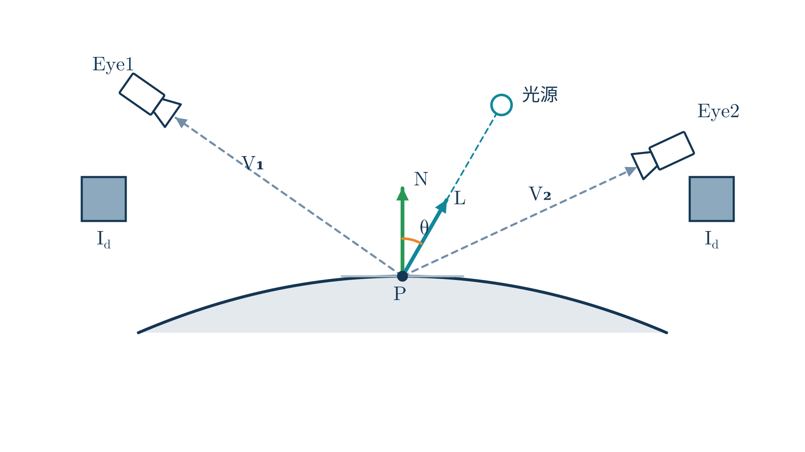
定律二 · Phong 镜面反射：方向性聚拢高光
光滑表面像一面微型镜子，将光主要沿理想反射方向 \(\hat{\mathbf{r}}\) 聚焦出射：
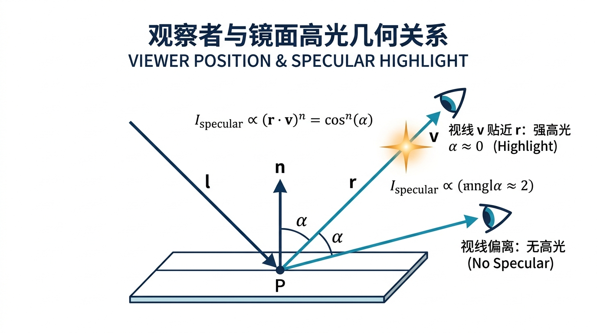
Phong 镜面反射公式与高光指数
镜面反射系数 \(k_s\)
\(k_s \in [0, 1]\)，控制高光的整体明度与反光率；在纯塑料中通常反射白光，在金属中带金属固有色。
视线夹角余弦 \(\hat{\mathbf{r}}\cdot\hat{\mathbf{v}}\)
\(\cos\alpha\)，度量视线是否正对反射方向；只有当 \(\alpha < 90^\circ\) 且表面正对光照时有效。
高光指数 \(n\) (Shininess)
\(n \in [1, 256]\)，通过高次幂使余弦急剧衰减；\(n\) 越大，高光斑越小越聚拢、材质越光滑镜面。
从三张图观察指数 n 如何压缩高光
固定物体与相机位置，只增大 Phong 指数 n；注意高光的明亮核心逐渐变窄。
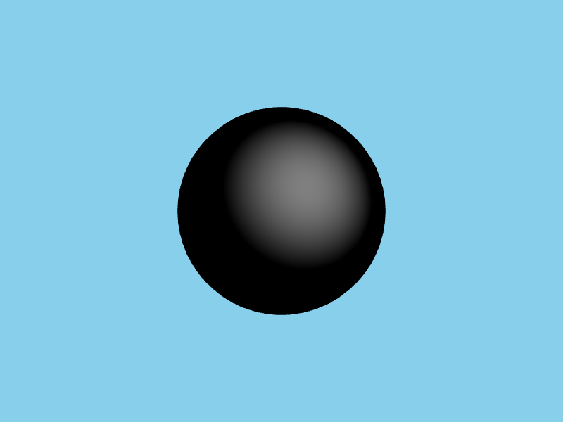
n = 1
宽而柔的高光
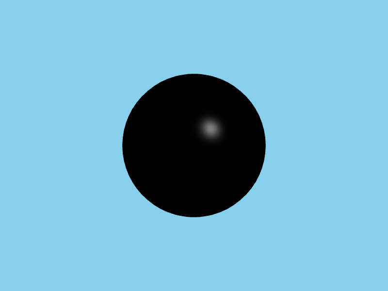
n = 32
中等宽度高光
n = 128
窄而尖的高光
镜面高光的核心特征：视点强相关性
高光强度的计算公式必须由视线向量 \(\mathbf{v}\) 直接主导：
视角敏感性
当观察者在三维场景中走动时，\(\hat{\mathbf{r}}\cdot\hat{\mathbf{v}}\) 夹角随视点动态变化，高光光斑会在物体表面发生位移、拉伸或消失。
质感暗示性
漫反射只交代“这是什么颜色”，而高光形态直接向人脑传递材质的光滑度、潮湿感或金属质感（如油画中的高光点睛之笔）。
移动视点：R 固定，R·V 却在变化
同一光源和同一表面点决定一条不变的理想反射轴 R；移动相机时，只有接近该轴的观察者看见强高光。
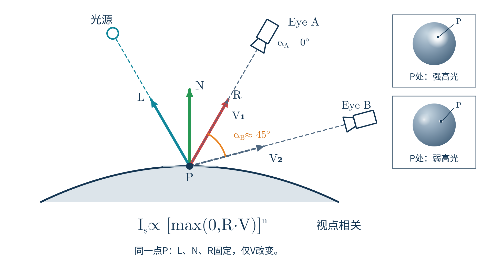
N·L 不变；但
R·V 改变，高光强度随之改变。
两大反射定律全景对比
漫反射与镜面反射并列构成了局部光照的核心双翼：
两图并排：只有漫反射 vs 只有镜面高光
同一几何体在不同反射项下呈现不同外观：漫反射负责连续明暗，高光负责视点相关亮斑。
Lambert 漫反射
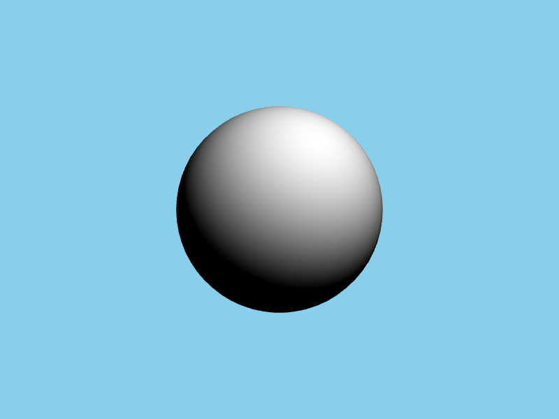
Phong 镜面高光
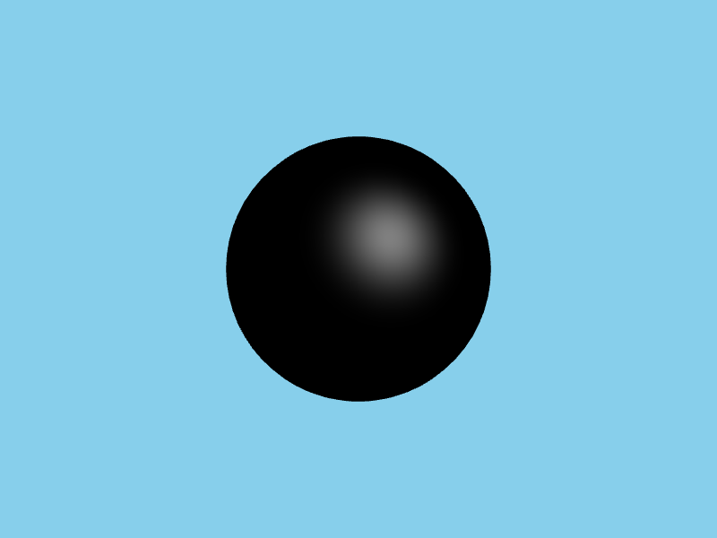
片元着色器中的向量点乘与计算
#version 300 es
precision highp float;
in vec3 vNormal;
in vec3 vFragPos;
uniform vec3 uLightPos; // 光源世界位置
uniform vec3 uViewPos; // 相机 Eye 世界位置
uniform vec3 uKd, uKs; // 材质漫反射与镜面反射系数
uniform float uShininess; // 高光指数 n
out vec4 fragColor;
void main() {
vec3 N = normalize(vNormal);
vec3 L = normalize(uLightPos - vFragPos);
vec3 V = normalize(uViewPos - vFragPos);
vec3 R = reflect(-L, N); // GLSL内置反射函数，注意-L
// 1. 漫反射计算
float diff = max(dot(N, L), 0.0);
vec3 diffuse = uKd * diff;
// 2. 镜面反射计算（带背光保护）
float spec = (diff > 0.0) ? pow(max(dot(R, V), 0.0), uShininess) : 0.0;
vec3 specular = uKs * spec;
fragColor = vec4(diffuse + specular, 1.0);
}reflect(I, N) 中第一个参数是“从光源指向表面的入射向量”，因此传入
-L。
AI 给出一段光照代码，怎样核验？
AI 助手生成了一段光照着色器代码，请作为专业图形工程师对其进行审查：
核验点一 · 向量方向与归一化
① 插值后的 vNormal 是否在片元着色器重新
normalize？
② 传入 reflect 的是 L 还是
-L？
核验点二 · 背光面高光泄漏
① 漫反射是否有 max(dot(N,L), 0.0) 截断？
② 背光面（dot(N,L) <= 0）时是否错误地计算了高光？
本课小结：两大反射定律构筑表面光学
视点无关 · 固有色与明暗 → 反射 \(\hat{\mathbf{r}}\) + 视线 \(\hat{\mathbf{v}}\) → Phong 镜面高光
视点强相关 · 光泽与耀斑